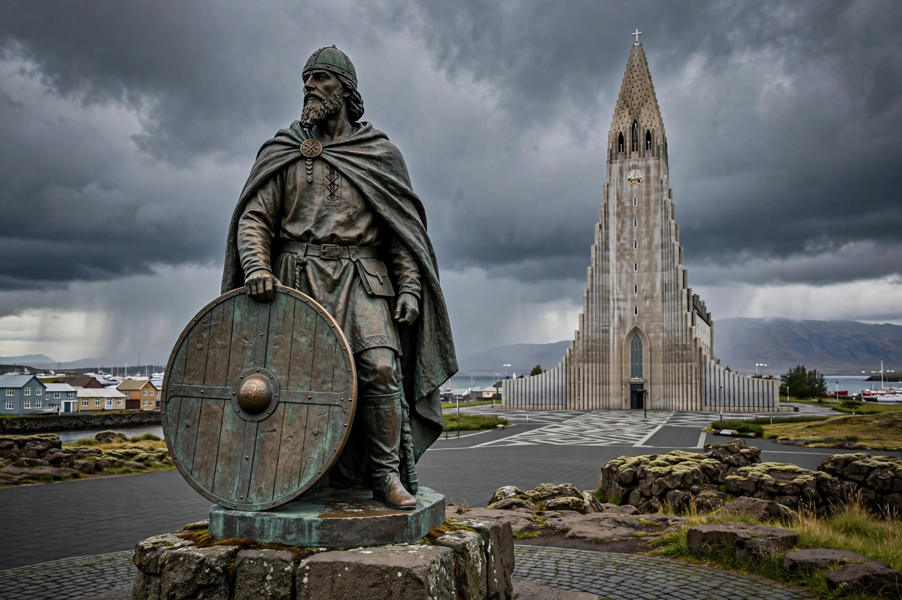

| Leif Erikson | |
|---|---|
 | |
| Born | c. 970, Iceland |
| Died | c. 1018–1025, Greenland (presumed) |
| Known for | First known European to reach North America (Vinland), c. 1000 |
| Parents | Erik the Red; Thjodhild |
| Nationality | Norse (Icelandic-Greenlandic) |
Leif Erikson (Old Norse: Leifr Eiríksson; c. 970 – c. 1018/1025) was a Norse explorer from Iceland, son of Erik the Red, regarded as the first European known to have set foot in continental North America — nearly five centuries before Christopher Columbus. According to the Icelandic sagas, he established a settlement called Vinland in the region he explored around the year 1000, identified with the archaeological site at L'Anse aux Meadows in Newfoundland, Canada.
Leif was born in Iceland, where his father Erik had settled after exile from Norway, and grew up in Greenland after Erik founded the Norse settlements there around 985. Described in the sagas as tall, strong, and judicious — nicknamed "Leif the Lucky" — he sailed to Norway around 999 and entered the service of King Olaf Tryggvason, under whom he converted to Christianity. Olaf charged him with bringing the new faith to Greenland.
The Saga of the Greenlanders tells that on his return voyage from Norway, Leif was blown off course and landed in a fertile country where wild wheat and grapevines grew, which he named Vinland ("Wineland"). The Saga of Erik the Red instead has Leif deliberately retracing the route of Bjarni Herjólfsson, who had sighted unknown lands to the west years earlier. In either telling, Leif sailed past Helluland ("Flat-stone Land", usually identified with Baffin Island) and wooded Markland ("Forest Land", Labrador) before reaching Vinland, where his party built houses — Leifsbúðir, "Leif's Booths" — and wintered before sailing home laden with timber and grapes. Later expeditions, including those of his brother Thorvald (killed by Indigenous inhabitants the Norse called Skrælingjar), Thorfinn Karlsefni, and Leif's sister Freydís, attempted settlement but were abandoned within a few years.
In the 1960s the Norwegian explorer Helge Ingstad and archaeologist Anne Stine Ingstad excavated a Norse site at L'Anse aux Meadows at the northern tip of Newfoundland — turf-walled halls, a forge, and artefacts including a bronze pin and a spindle whorl — proving a Norse presence in the Americas around 1000 CE. The site is now a UNESCO World Heritage Site and National Historic Site of Canada. Tree-ring evidence published in 2021 dated Norse activity there precisely to 1021 CE.
Leif Erikson is commemorated with statues across North America and Scandinavia; the United States observes Leif Erikson Day on 9 October. His voyages form part of the Vinland sagas, among the most famous texts of medieval Icelandic literature, and the Greenland settlements he helped sustain survived into the 15th century.
See also: Vinland · Erik the Red · L'Anse aux Meadows